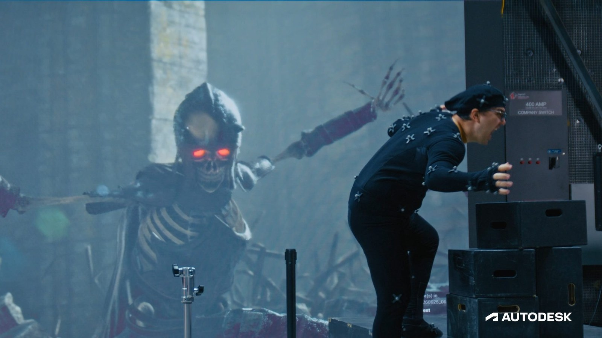

01
AI MOTION / MAYA
OFFICIAL PRODUCT VISUAL
· Local visual evidence · 點圖開啟原始來源
Source ↗
MotionMaker Bring Your Own Data：用自己的動畫庫訓練 AI Motion
本機訓練 studio-specific motion model，生成結果仍可在 Maya 裡完整編修。

Animation
★★★★★
完整分析
Animation / AI Motion
MotionMaker 的 Bring Your Own Data 允許團隊用自己的 rig 與 hand-key / mocap 資料，在本機訓練客製 ML motion model；生成的動作仍可回到 Maya Graph Editor、Time Editor 與 Dope Sheet 繼續編修。
輸入 / Rig / 訓練
輸入可以是 mocap 或 keyframe animation，先 retarget 到標準角色、標記 walk/jump 等 action style 後訓練。Autodesk 強調訓練與模型都留在本機；NVIDIA GPU 可加速，官方案例中約 40 分鐘資料在 RTX A2000 筆電上訓練約 7 小時。
Production 判斷
這比一般 text-to-motion 更接近 studio pipeline：核心價值是把既有 animation library 的風格與角色性格變成可重用生成模型。優先測 crowd/NPC locomotion，並量測 foot lock、root motion、轉向與 hero animation cleanup 成本。